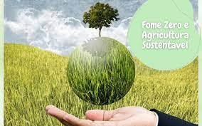

Fome Zero e Agricultura Sustentável
Para mim, um dos problemas mais importantes e que influência os outros 16 tópicos. A fome é cruel e humilha um ser humano, que é privado de algo básico para sua sobrevivência.
Este problema influência diretamente o período de aprendizagem, a saúde, o lazer e o futuro profissional de alguém. Pessoas que passam por essa situação não tem uma garantia de futuro, já que a fome é o principal fator para mortes diretas e que causa doenças, que consequentemente gera a morte dos indivíduos
E agora, quem deve solucionar?
A fome não é um problema pessoal, é de toda a sociedade. Uma situação de saúde pública, que as autoridades devem ter uma atenção redobrada, já que o papel deles é cuidar de sua população
Uma das soluções seria incentivar a agricultura familiar, assim mais núcleos familiares teriam seus sustentos e os consumidores teriam mais alimentos direcionados para a população local e com custo menor. Já que as grandes produções são para exportações.